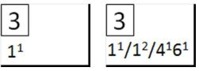
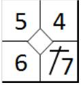
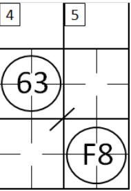
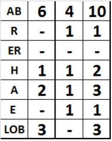

Central section
The central section, which is used to describe all the plays made during the game, is laid out as follows:
[1] Space for number of the innings.
[2] Space for defense substitutions.

The space [2] should contain the numbers of the defensive positions to indicate the substitutions made in an inning with an exponent (ex. 1 1 , 6 2 ). In the event that a number of substitutions are made in the same inning, they should all be separated with a slash ‘/’.

The various squares building the central section record plays in an counter clockwise direction: the bottom right square records the batter-runner’s play for first base, the top right square the play for second base, and so on. The put out of the batter-runner or runner should fill all the available space. As the runner reaches each base, an oblique line should be added to close off the square representing that base. The open area in the centre of the square should be filled in case of (earned) runs (see chapter 5).

When an inning has finished, a diagonal line is inserted after the final batter (see example) to indicate that this is the end of the inning, and that the starting batter of the next inning will be the one after the line.

When more than nine batters take their turn in a single inning, the next column should be used. The number of the inning must be repeated, and an arrow is used to indicate that the inning continues.
For the first inning, only the figures for the first inning are given alongside the abbreviations in the left - hand column. For subsequent innings, the left-hand column should c ontain s the data for each individual inning, and the right-hand column contains the cumulative totals, inning by inning, which are calculated by adding the numbers from the two previous left-hand columns
| AB |
Number of times at bat in the inning. This does not mean Plate Appearances (PA) but times At Bat (AB). |
| R |
Number of runs scored in the inning. |
| ER |
Number of earned runs against the pitcher(s) in the inning. |
| H |
Number of hits in the inning. |
| A |
Number of assists in the inning. |
| E |
Number of errors committed in the inning. |
| LOB |
Number of runners left on base in the inning. |